Sunset
Short stop-motion animation film
- Dragonframe
- After Effects
- Puppetry
A trophy girl comes to life and learns that the world is not as perfect as she once believed it to be.
Sunset was my final project for my Fundamentals of Animation course at Harvard during Fall 2023; I captured frames using Dragonframe in the studio and composited them with live footage I filmed in After Effects.
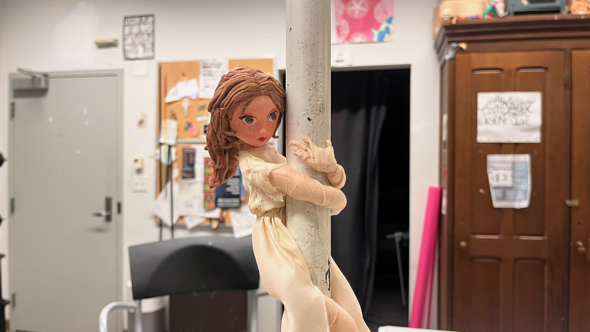
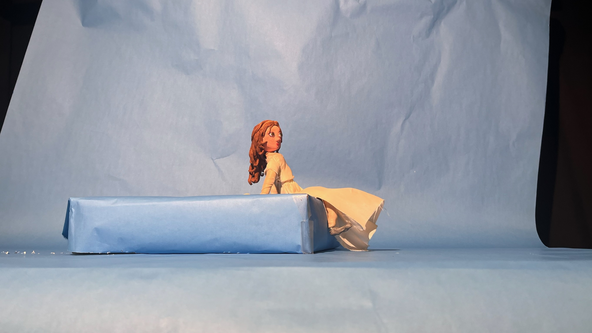
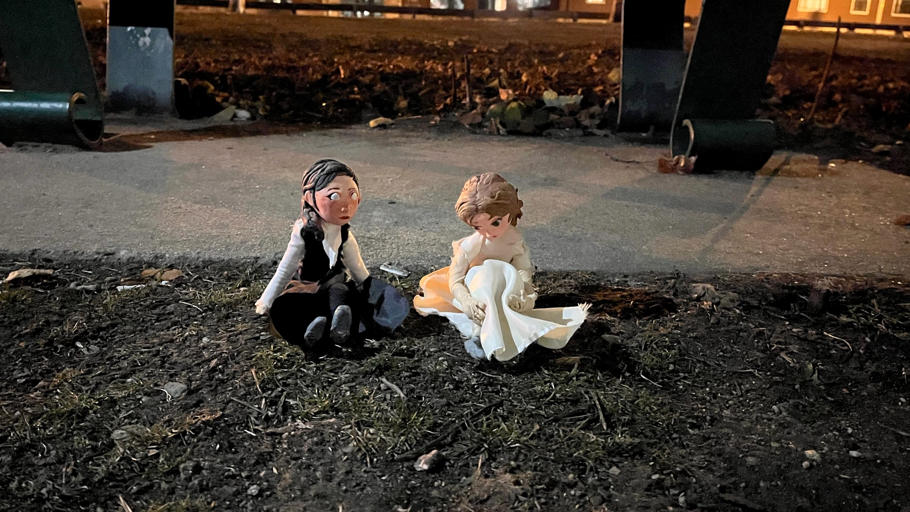
Inspiration
I grew up being what school labeled as "the gifted child" -- praised by my teachers, in a variety of extracurriculars, and always striving to do more. During my first year of college, all of that fell apart and I began to wonder whether the adults in my life had been mistaken to believe I was gifted.
Sunset arose from a series of sketches I made during that year when I was trying to figure out who I was without all the accolades and perfection. The sketches sat stashed in a digital sketchbook for a while until I had the chance to bring them to life through this animation.
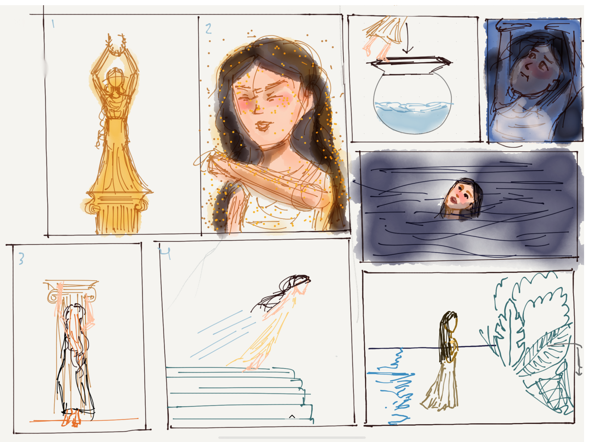
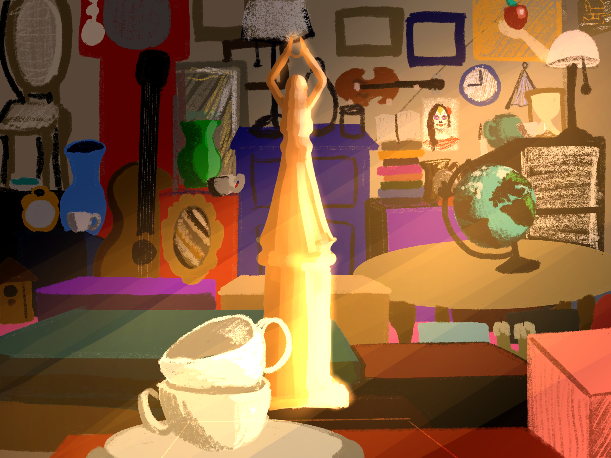
For me, trophies and medals were always physical representations of success and achievement. They felt concrete and served as permanent proof that no one could contradict.
But is that all a trophy can represent? Who decides its worth?

In Sunset, a trophy comes to life as magical puppet that begins to explore the world. For a while, she's enchanted by the simplicity of being in the moment without being perceived by anyone.
Upon returning home, she overhears the human girl who earned her being told she "isn't good enough." As a symbol of success, the trophy puppet internalizes these words and begins to question her worth.
Process
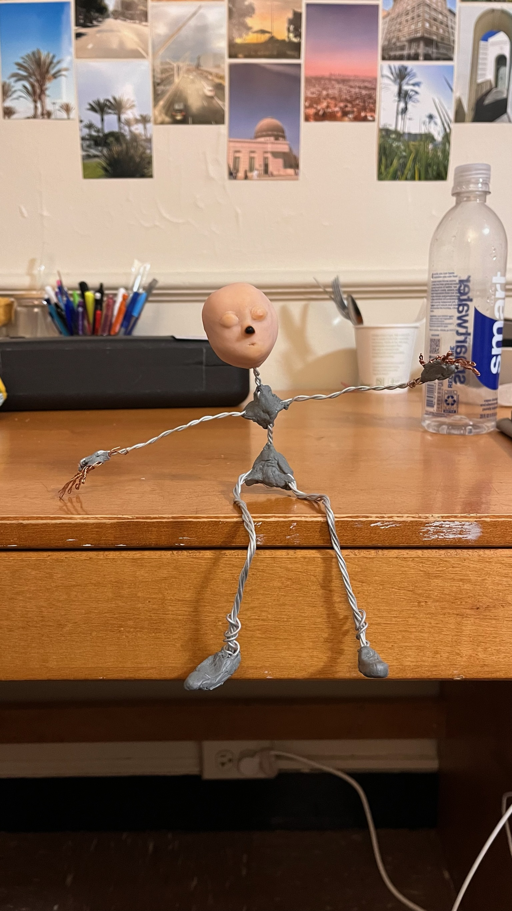
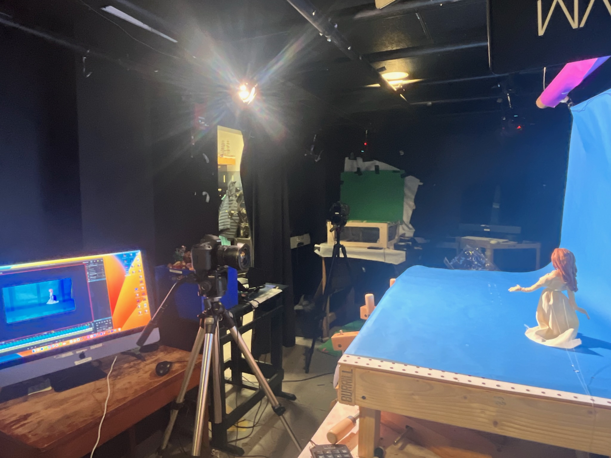
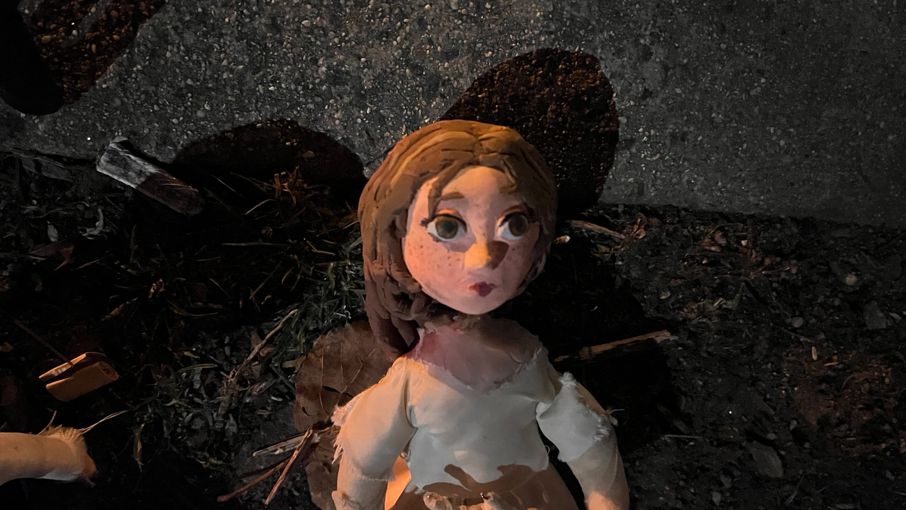
The production of my short film began with the creation of my puppet. I built a wire armature and sculpted the body out of clay, then painted it and created a dress resembling those worn by the Greek goddess of victory, Nike.
Scenes with the puppet were shot frame by frame on Dragonframe in the animation studio using a stop-motion board and a blue screen. I filmed live footage of the backgrounds on campus, envisioning the different locations I'd want my puppet to explore.
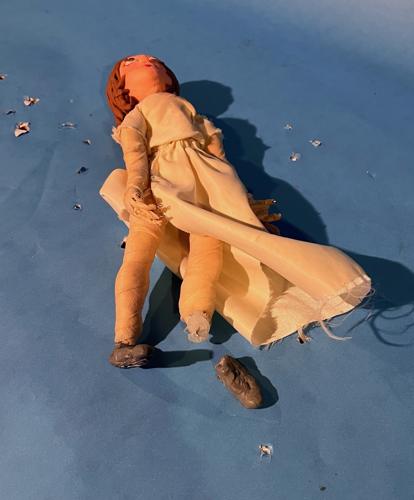
As with any animation project, there were inevitably... complications.
With three minutes of screentime, my puppet had to endure over 2200 frames of stop-motion animation, standing up for long hours at a time, which eventually resulted in a broken foot that had to be repaired.
There were scenes I was unable to shoot with the studio's blue screen due to space limitations, therefore some scenes were filmed on-site, such as the river scene at the end which was shot frame by frame on my iPhone.
Despite some challenges, I was able to complete my first animated short film on time and with space for edits after receiving feedback.
This project taught me how to use Dragonframe, how to adjust lighting and camera angles, and how to composite a blue screen with live-action footage on After Effects.
One of my favorite details about this project is the range of emotions my puppet was able to convey depite not having an adjustable face for expressions. Throughout the film, you can see her sense of wonder and curiosity, her thoughtfulness, her sadness, and her determination. She becomes more than simply a trophy representative of perfection.


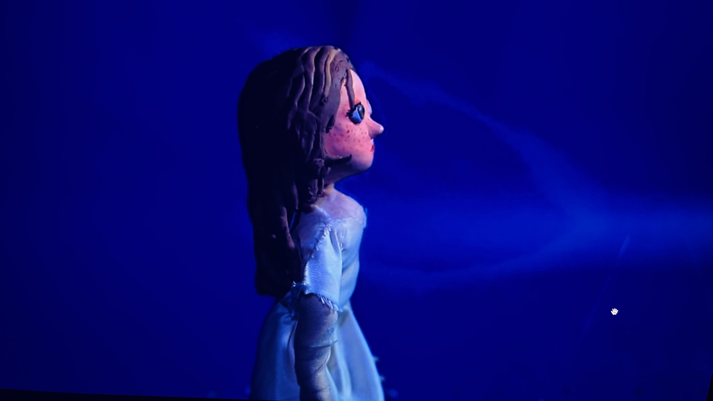
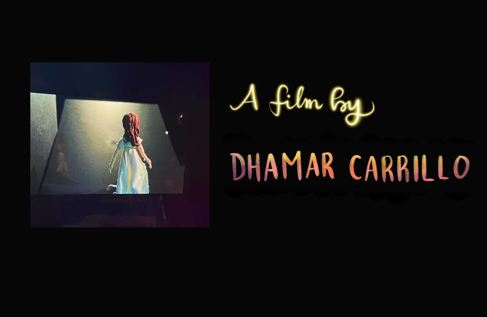